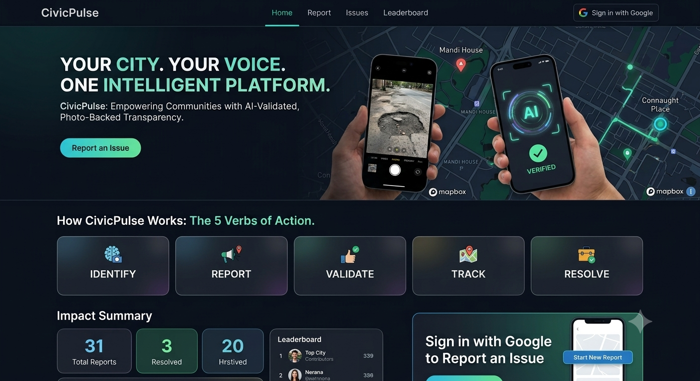

CivicPulse — Civic Issue Tracker
An AI-powered civic reporting platform built during the Vibe2Ship Hackathon (Coding Ninjas × Google Cloud). Citizens report geo-tagged issues with photos; 5 autonomous Gemini AI pipelines categorize, deduplicate, escalate, and verify resolutions in real time.